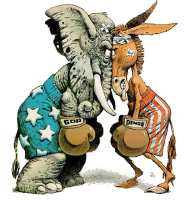

Why US Broadband is So Slow
The CEO of sonic.net wrote a clear and concise blog entry on Why US Broadband is So Slow. Sonic is a wonderful small ISP that serves the Bay Area and have been in the middle of the fight to bring good broadband to its customers for years. I've been their customer for a long time. It's nice to have a service provider who knows what they're talking about. The summary: blame the congresscritters.| March 7, 2011 |